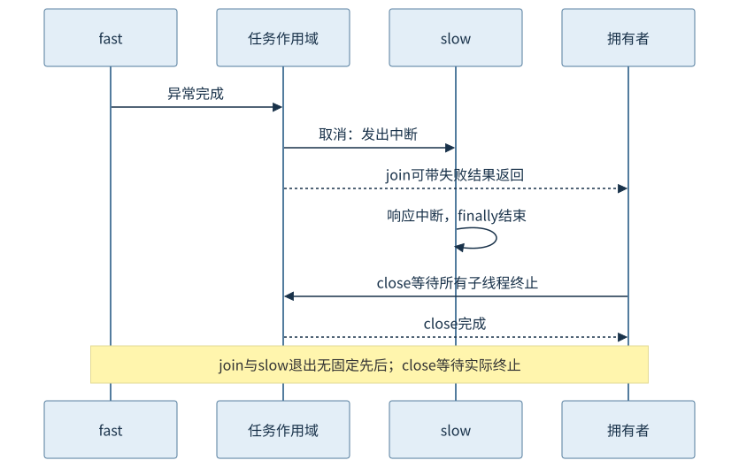

第六篇 · 内存模型、同步与线程
第29章 作用域值与结构化并发
当线程不再等于固定工作槽，上下文就更需要明确边界。把绑定、派生、取消和退出放在同一棵任务结构里。
本章基于 Java 开发工具包（Java Development Kit，JDK）25.0.5.0.2 与 OpenJDK HotSpot；Java 虚拟机（Java Virtual Machine，JVM）的实现结论固定到提交 1775ea114f64。规范、实现与本轮观察分别解释。源码阅读、运行说明与证据索引相互对应。
29.1 线程局部数据
29.1.1 键弱引用不等于值自动及时释放
ThreadLocal把某个线程的值放在线程自己的映射里，而不是把所有线程的值存在ThreadLocal对象本身。固定ThreadLocalMap的条目以弱引用持有键，以普通强引用持有值；键失去外部强引用后可以被回收，但映射中的陈旧值要等有关清理路径处理，不能承诺立即释放。
长期平台工作线程可能跨越多个请求存活，遗忘remove会使大对象保留，也可能让后续任务读到旧上下文。本章普通示例在finally中remove；嵌套使用已有值的场景还须恢复原值，不能机械删除外层绑定。线程退出会清理映射，但不能拿这一点替代线程池任务边界的清理责任。

29.1.2 海量短线程有另一种成本
短生命周期虚拟线程让长期残留问题有所不同，但每线程初始化和可继承数据复制仍可能昂贵。成千上万任务各自建立数据库连接或大缓存，可能把线程资源节省转移成堆与外部资源压力。ThreadLocal适合线程局部状态，不是自动有界的对象池。
可继承线程局部值的复制发生在相应线程构造或派生协议中，值本身可能仍是共享可变对象；复制映射不是深度复制。应问清数据属于请求、任务作用域还是底层线程。请求上下文随调用与子任务流转时，下一节的绑定模型更能表达其生命期。
29.2 作用域值
29.2.1 绑定只在动态作用域内存在
ScopedValue通过私有稳定键标识上下文。where建立载体式绑定描述，run或call在当前线程执行有界动态作用域；其中可读取get。嵌套where可以重绑定同一键，内层正常或异常结束后恢复先前绑定，最外层退出后回到未绑定。动态作用域包含调用的下层方法，不只等于源文件的花括号文本。
本章ContextJourney不启用预览：输出outer、inner、恢复outer，退出后isBound=false。把键保持私有可以限制谁有能力读取上下文；绑定不是可随意set的全局变量，不应把键公开给不需要它的代码。get在未绑定时没有一个隐式默认上下文，本例用isBound描述退出状态。

29.2.2 不可变绑定不等于不可变内容
一个作用域中的绑定不能被任意赋值覆盖，不代表它指向的对象不可变。绑定一个可变Map后，多个子任务仍可能并发修改同一Map，必须另有同步或改用不可变值。上下文传播解决访问与生命期问题，不能替代数据竞争推理。
任意Thread.start或任意执行器任务不自动继承调用者ScopedValue绑定。结构化任务作用域在绑定内打开、在相容结构下派生子任务、在退出前结束子线程，才有文档规定的继承关系。本例预览程序在where内open，再fork；不把这种条件性传播泛化为所有异步工作。S1
29.3 结构化任务生命周期
29.3.1 拥有者负责fork、join与close
任务作用域把并发子任务约束在父任务生命期内。JDK 25使用StructuredTaskScope.open创建；打开它的线程是拥有者，由它fork派生子任务、join取得策略结果，最终close等待所启动的子线程结束。默认使用虚拟线程，线程工厂与等待策略可在打开时配置。
fork、join与close有拥有者及调用顺序约束；不能把作用域作为无界共享线程池。当前接口join只允许调用一次，join后不再fork。即使join按策略提前完成，仍需close承担终止边界。源代码中try-with-resources把这项责任绑定到退出路径，避免任务逃出父调用。

29.3.2 取消请求与实际退出是两件事
本例选awaitAllSuccessfulOrThrow策略：全部成功则join完成；某子任务失败可取消其余子任务并使join抛FailedException。取消会阻止继续启动并中断尚在运行的子线程，但发出中断不等于子线程已经终止。close仍要等待全部子线程结束。
withTimeout设置作用域等待超时，当前超时后取消并产生相应异常；它不是强制杀死所有子线程的硬期限。忽略中断、不可中断本地阻塞或缓慢清理都可能延迟close。本轮使用可中断sleep并传播InterruptedException，5秒作用域超时是教学约束；没有刻意运行忽略中断的无限任务。

29.4 类库与运行时支持
29.4.1 继承依靠受约束的持有结构
固定实现中ScopedValueContainer捕获绑定快照，ThreadFlock记录打开时的绑定与拥有者；StructuredTaskScopeImpl以线程群结构派生、取消和关闭子任务。运行时配合当前线程绑定访问与延续执行，挂载迁移不应把上下文换成载体的上下文。
结构化约束使父作用域不能在子任务仍使用其上下文时先退出；这解释为何线程继承与关闭规则必须一起设计。它不需要为每个子任务深度复制整棵上下文对象图，也不让外部可变资源自动变为线程安全。ThreadFlock属于内部实现，不是读者应该直接调用的公共接口。
29.4.2 任务树给诊断补充拥有关系
调用栈展示一个线程当前调用链，线程视图展示多个执行身份，任务树补充谁派生谁、谁负责等待和关闭。三个视角共同回答“哪个请求还持有这些工作”。ThreadContainer和结构化转储可以保留这种关联；平铺线程名不能独自恢复全部父子关系。
本章把任务树按正式源码绘制，绑定与退出日志提供本次顺序证据；没有额外取得结构化程序运行中的线程转储，不把机制任务树包装成工具实测。第28章已展示实际虚拟线程转储入口；复杂故障的长期记录与综合诊断在第34—36章继续。
29.5 JDK 25接口形态与状态
29.5.1 正式与预览分别构建
应用程序编程接口（Application Programming Interface，API）状态必须按目标版本记录：ScopedValue在JDK 25是正式API；结构化并发是第五次预览。正式示例进入普通根聚合；StructuredJourney放在独立preview模块，编译与运行都显式启用预览，普通示例不会因为预览参数全局开启而改变边界。
预览API可以继续演进，不能承诺下一版本源码兼容。使用JDK 25编译器、release 25及对应运行时，保留预览编译提示；“已经编译成功”不意味着API已正式化。本轮也没有据此要求所有读者启用预览或迁移既有执行器。S2
29.5.2 不要混用早期预览形态
本章使用open、fork、join、Joiner和Configuration.withTimeout；JDK 25的StructuredTaskScope是带结果策略的接口形态。早期版本常见的new StructuredTaskScope.ShutdownOnFailure、joinUntil、throwIfFailed不是本章示例使用的创建／失败处理模型，复制旧文章时必须核对。
try (var scope = StructuredTaskScope.open(
StructuredTaskScope.Joiner.<String>awaitAllSuccessfulOrThrow(),
config -> config.withName("request-scope").withTimeout(Duration.ofSeconds(5)))) {
这是真实源文件中的作用域创建片段；完整程序还必须fork、join并正确关闭。策略决定join返回何种结果或异常；关闭决定子线程不能继续逃出。把结果策略、取消请求和资源释放边界拆开理解，才不会把一次join误认为所有工作都已结束。
观察与边界
普通CH29-E01与预览CH29-E02均已编译运行。成功路径两个子任务读到request-29并汇合结果；失败路径fast主动抛出已授权教学异常，slow收到中断并执行finally，拥有者完成close后接收FailedException，随后绑定退出。日志来自一次真实交错。
本次slow的finally日志先于“拥有者即将close”，不意味着规范保证它总先于join返回。机制图明确两者无固定先后，只保证close完成后子线程已结束。两条预览路径均正常进程退出；未触发超时，不把超时处理或忽略中断的后果写为实测。
回顾与思考
上下文需要数据语义与生命期两种约束；任务结构确定谁负责等待和结束。不可变绑定、取消信号和API状态分别回答不同问题，不能互相替代。
- 为什么ThreadLocalMap键是弱引用仍不能保证值及时释放？
- 若ScopedValue绑定可变集合，子任务继承后还要证明哪些同步条件？
- 为何withTimeout到期也可能让close继续等待？
第六篇的三条主线在此汇合：同步关系证明数据可见，线程／锁／载体证据解释等待，作用域结构规定上下文与子任务结束责任。下一篇进入启动、跨次运行复用和本地边界。
来源
- ScopedValue 25文档：绑定、重绑定、安全共享与结构化继承
- StructuredTaskScope 25文档：预览状态、open／fork／join／close与策略配置
- ThreadLocal实现：ThreadLocalMap.Entry、remove与陈旧条目清理
- 作用域实现：open、cancel、onComplete、join、close和超时
- 绑定与线程群：构造时捕获绑定；结合ScopedValueContainer与ScopedValue实现
精确路径、符号、条件和本轮记录见来源索引；源码阅读页是教学源码，不冒充HotSpot实现。